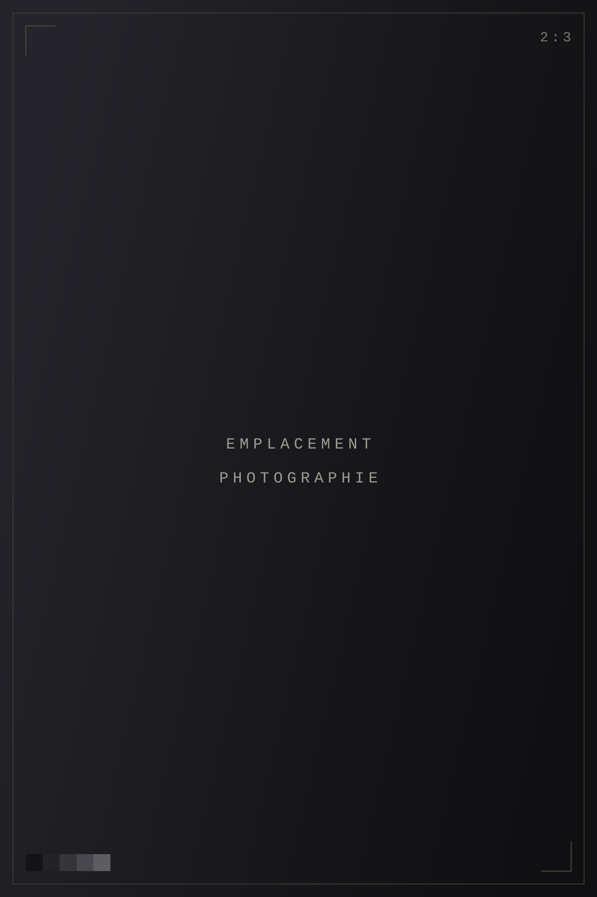
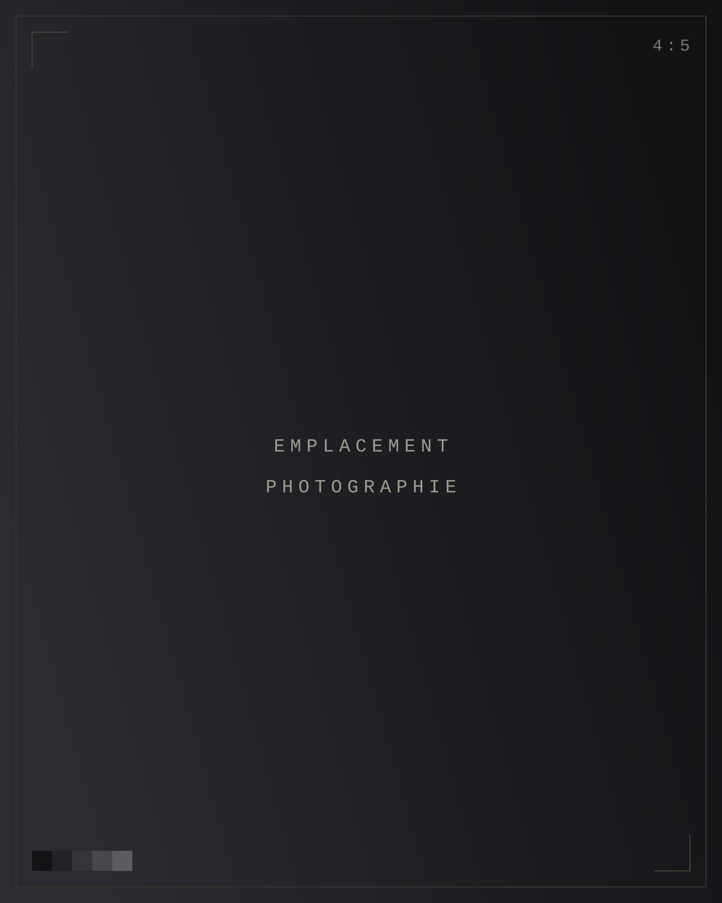
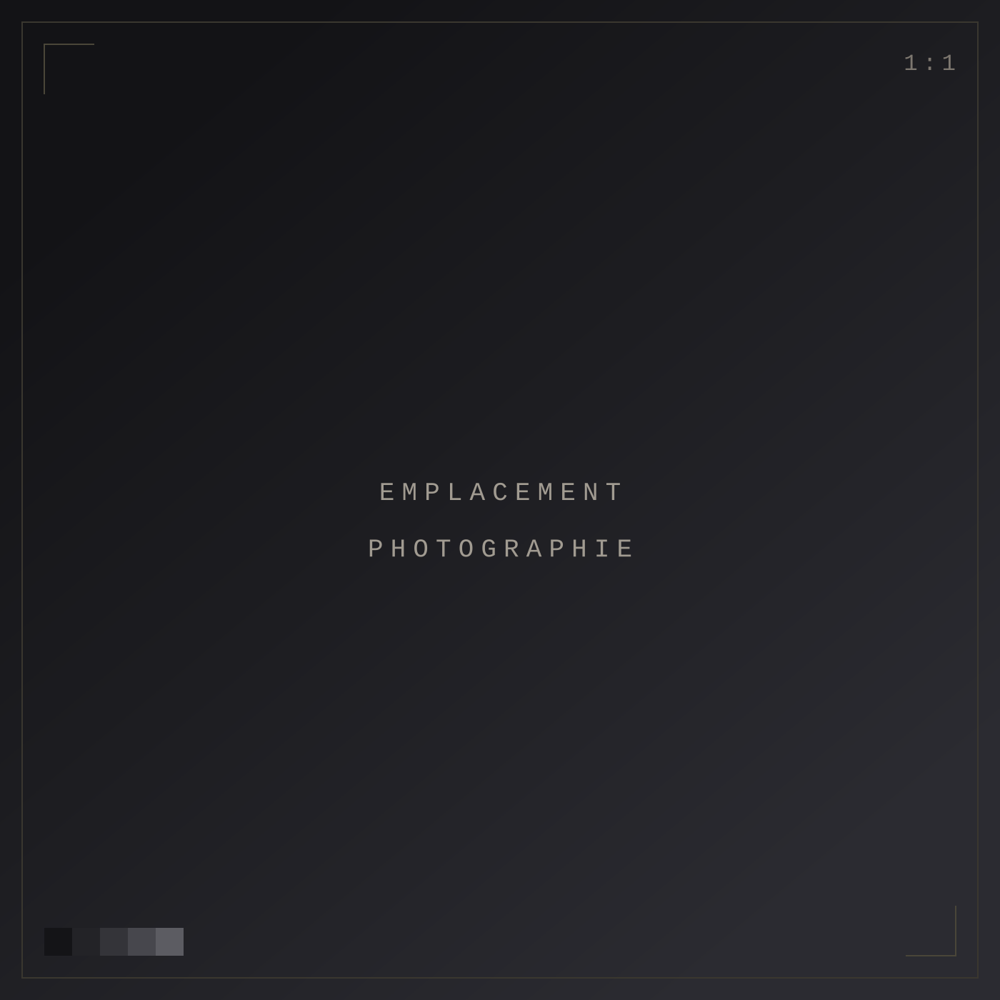
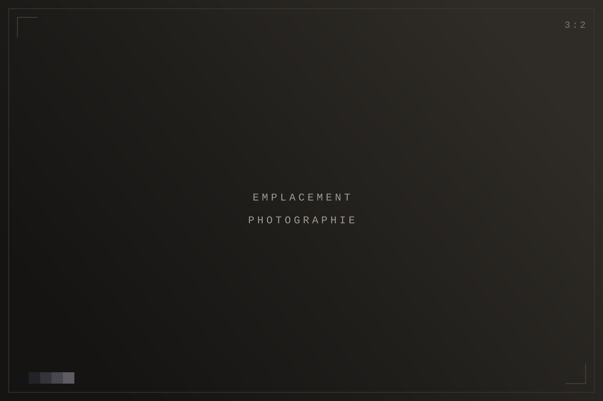

Mariage traditionnel · Côte d'Ivoire
Florent
Une célébration, une histoire
Florent, une célébration, une histoire : le reportage d'un mariage traditionnel en Côte d'Ivoire, raconté à la première personne.
Portfolio
Cinq catégories, prêtes à recevoir les sélections au fil des séances.
Catégorie
Les portraits retenus après chaque séance prendront place ici.


Catégorie
Les vues d'ensemble et les moments forts ; les albums complets figurent sur la page Événements.


Catégorie
Les cérémonies couvertes, présentées par date.



Catégorie
Des histoires racontées en images et en mots, chapitre après chapitre.
Mariage traditionnel · Côte d'Ivoire
Une célébration, une histoire
Florent, une célébration, une histoire : le reportage d'un mariage traditionnel en Côte d'Ivoire, raconté à la première personne.
Catégorie
Les travaux qui ne relèvent d'aucune des catégories précédentes.

Cette catégorie accueille les travaux personnels et les sujets qui n'entrent dans aucun des quatre terrains précédents.